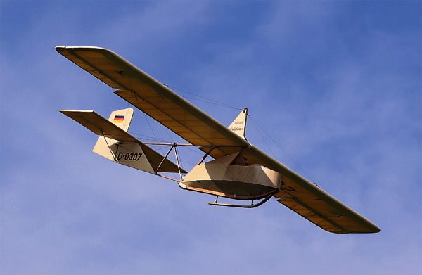
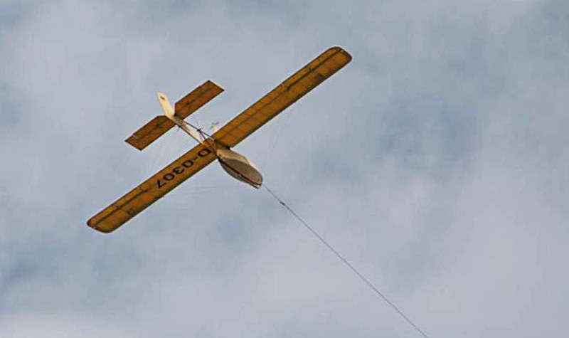

|
With restrictions on powered flying imposed by the Allies through the Treaty of Versailles, the Germans looked to gliders and sailplanes to feed their aviation thirst after the Great War. In addition to the pleasure of civilian sport flying, German officials also recognized the value of training military pilots with gliders. The SG-38 was a primary craft used to train the next generation of Luftwaffe pilots. First flown in 1938, approximately 10,000 were built over the next decade or so.
I designed this quarter-scale model based upon drawings that I found online at Scale Soaring UK as well as numerous photographs. While it does not replicate any specific aircraft, it is representative of the SG-38 training gliders to which cockpit pods were added for training in colder weather. The SG-38 was most commonly seen with the pilot fully exposed, and indeed, modern replicas are still flown that way today. The model structure is made up of tight grain Douglas Fir purchased as flooring from a local lumberyard, as well as balsa and thin plywood sourced from both Balsa USA and SIG Mfg. The rigging is fully functional, and is made up of stainless steel fishing leader, anchored with Dubro 1:4 scale turnbuckles, 4-40 fork end fittings and landing gear straps. The turnbuckles are all safetied using soft .008 stainless steel wire to prevent inadvertent adjustments. The model is covered with Solartex and the exposed wood surfaces are varnished with thin Zap CA, applied with Q-tips and lightly sanded between the three coats. The landing skid is laminated from oak and is supported by two custom machined shock struts. I originally intended my SG-38 to be flown in slope lift along the dunes of Cape Cod, but instead it has only flown via aerotow launches. It handles surprisingly well on tow, with little need for more than keeping the wings level. Once released, it glides smoothly, though the drag from the rigging, open framework and cockpit takes its toll. It is best to target a midfield landing, and to not be surprised when it ends well short of that. The SG-38 has flown in five states to date. |
Buddy Bear making a smooth final approach in the SG-38. |
|
While it has been a few years since last flown, the SG-38 will rise again. It is a work in progress, and I intend to add some rudimentary instruments to the cockpit, as well as replace the vinyl markings with paint when it is next on the workbench.
The SG-38 is equipped with a Hitec Optima 7 receiver and 4 HS-645 servos. I use the Aurora 9 when flying, along with Hitec's Telemetry Voice Module to monitor altitude in flight. The onboard radio is powered with a 5-cell NiMH battery.
|
Buddy Bear rests up for his next open cockpit flight. |
|
Aerotowing behind a 1:4 scale Cub flown by Jason Shulman. Despite the apparent success, a 20cc 4-stroke gas engine is not enough for this combination! |
|---|
First flown in 2010 First Place Sport Scale, 2010 WRAM Show |
| Span: | 105 inches | |||
| Length: | 65 inches | |||
| Weight: | 11.5 pounds | |||
| Wing Area: | 1530 square inches | |||
| Wing Loading: | 17.3 oz/sq ft | |||
| Wing Cube Loading: | 5.3 | |||
| Flown in: | Connecticut, Delaware, Indiana, Massachusetts, and New York |
Ride along by clicking on these videos!

Photos courtesy of Gunny Bummers, Len Buffington, and Paul Dixon
Aerotowing offers an exciting launch option for scale soaring enthusiasts.
Copyright 2015, Thayer Syme. All rights reserved